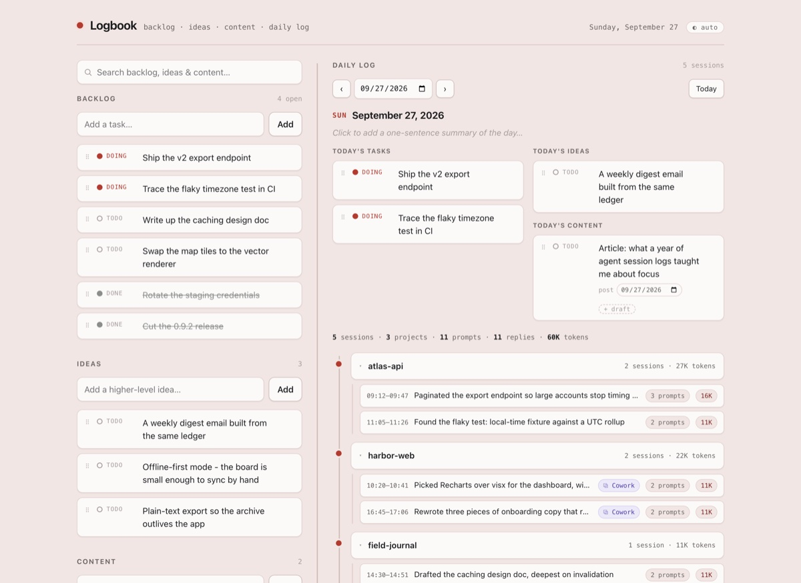
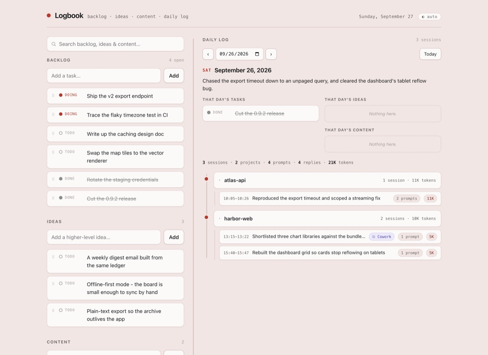

Logbook
As I worked on various projects with Claude, I realized that I needed a lightweight task tracker to stash both big and small ideas and track what I was working on over time. Instead of adapting something off-the-shelf, it was way more enjoyable to build exactly to my specifications, which I suspect is where all software is headed. The logbook assumes you're working with Claude (both Cowork and Code) and automatically summarizes each of your sessions and produces a daily summary. You can also append handoff documents or images/mocks to a card, or schedule future content.

Some fun learnings: The daily summaries were surprisingly critical until I calibrated the feedback to skew positive (I don't need Claude to shame me for using fewer tokens than the day before!). Also, Claude is bad at assessing what work is more or less important, and without guidance it will often center its daily summary on trivial throwaway sessions.

Limitations: local-only, Claude-only
Logbook is open source under the MIT license: github.com/magratheazaphod/logbook.
Screenshots use synthetic data.